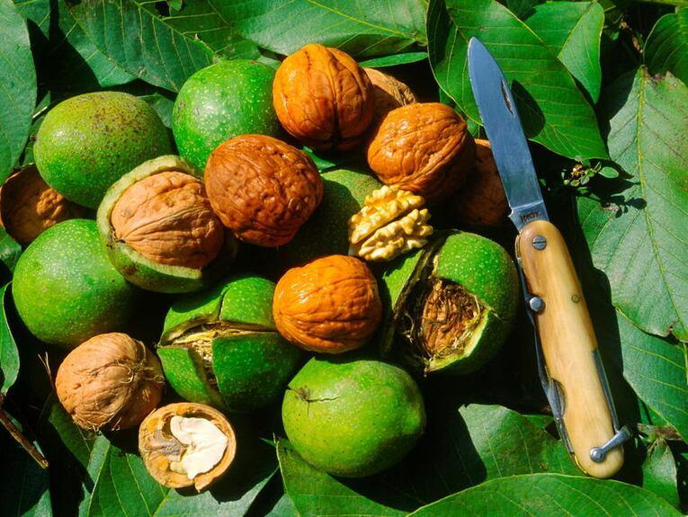
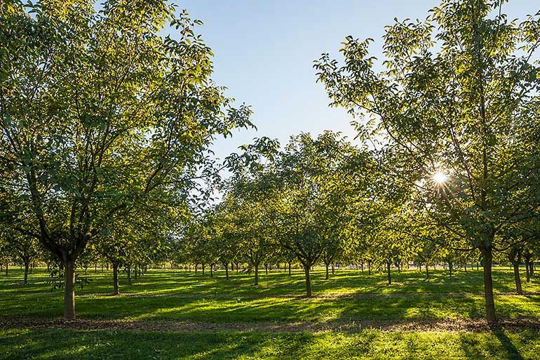

Noix
du Périgord


⟹ Fruits & Terroir du Périgord ⟸
La noix du Périgord AOP est l'un des trésors les plus discrets mais les plus précieux du terroir aquitain. Cultivée depuis des millénaires dans les vallées de la Dordogne et du Lot, elle est aujourd'hui protégée par une Appellation d'Origine Protégée qui consacre un savoir-faire ancestral et une typicité géographique incomparable. Le Périgord est la première région productrice de noix de France, et sa production représente près de 70 % de la récolte nationale.

La culture du noyer en Périgord remonte à l'Antiquité. Des traces de consommation de noix ont été retrouvées dans les grottes préhistoriques de la Vézère, témoignant d'une relation millénaire entre l'homme périgourdin et cet arbre majestueux. Au Moyen Âge, la noix était une denrée d'une valeur considérable — elle servait de monnaie d'échange, payait les impôts seigneuriaux et constituait l'une des bases de l'alimentation paysanne locale.
« Dans le Périgord, la noix est reine — elle nourrit l'homme, éclaire sa maison et soigne ses maux depuis la nuit des temps. »
— Proverbe périgourdin traditionnelL'huile de noix du Périgord était autrefois produite dans de nombreux moulins à huile le long des rivières de Dordogne. Cette huile précieuse servait à la fois à l'alimentation, à l'éclairage des lampes et à la peinture des artisans. Au XIXe siècle, Périgueux comptait encore plusieurs dizaines de moulins à noix en activité, dont certains perdurent encore aujourd'hui sous forme artisanale.
L'AOP, obtenue en 2002, impose des règles strictes : seules quatre variétés traditionnelles sont autorisées — la Corne, la Grandjean, la Marbot et la Franquette — cultivées dans une aire géographique précisément délimitée couvrant la Dordogne et les cantons limitrophes du Lot, de la Corrèze et du Lot-et-Garonne. Ces variétés anciennes, adaptées au terroir périgourdin, développent des profils aromatiques que les variétés commerciales modernes ne peuvent reproduire.

Aujourd'hui, plus de 3 500 producteurs cultivent des noyers en Périgord sur environ 15 000 hectares. La production annuelle atteint entre 8 000 et 12 000 tonnes selon les années, dont une partie significative est transformée en huile, en cerneaux conditionnés ou en produits dérivés (liqueurs, pâtisseries, confiseries).
Noix fraîches AOP (septembre-octobre) : récoltées et vendues immédiatement après la cueillette, avec leur cerneau encore humide et leur goût lacté incomparable. À consommer rapidement — elles ne se conservent que quelques semaines.
Noix sèches AOP (novembre à juin) : après séchage complet, elles développent leurs arômes définitifs et se conservent plusieurs mois dans un endroit frais et sec. La forme la plus courante sur les marchés.
Huile de noix du Périgord : pressée à froid dans les moulins traditionnels, cette huile dorée aux reflets ambrés est l'un des condiments les plus précieux de la gastronomie périgordine. À utiliser crue — jamais en cuisson — sur des salades, des pâtes ou des légumes vapeur.
Cerneaux au naturel ou au sirop : les cerneaux de noix fraîches conservés dans du sirop de sucre constituent une confiserie traditionnelle périgordine, souvent aromatisée à l'Armagnac ou au vieux rhum.
Liqueur de noix verte : préparée avec des noix cueillies avant maturité (en juin), macérées dans de l'alcool avec sucre et épices. La fameuse « liqueur de brou de noix » périgordine est un digestif traditionnel servi dans toutes les fermes de la région.
Gâteau aux noix du Périgord : tarte, cake ou fondant aux cerneaux de noix — les pâtisseries à base de noix du Périgord sont innombrables et constituent l'un des desserts de référence de la gastronomie régionale.
Les noix du Périgord AOP se trouvent directement chez les producteurs, sur les marchés traditionnels ou dans les coopératives de la région.
Marché de Sarlat-la-Canéda — Le plus beau marché du Périgord Noir, animé chaque mercredi et samedi matin. En automne, les étals croulent sous les noix fraîches, les cerneaux et les huiles artisanales.
Marché de Sainte-Alvère — Marché spécialisé en produits du terroir périgourdin, avec de nombreux producteurs de noix proposant leurs récoltes directement en vente.
Moulin de la Tour (Sainte-Nathalène) — L'un des derniers moulins à noix traditionnels du Périgord, en activité depuis le XVIe siècle. Visite du moulin et vente directe d'huile de noix pressée à la meule de pierre.
Périgueux et Bergerac — Les épiceries fines et les marchés couverts de ces deux villes proposent une large sélection de noix AOP, d'huiles et de produits dérivés tout au long de l'année.
Coopérative Périgord Noix (Sainte-Alvère) — La principale structure de mise en marché des noix AOP du Périgord, avec boutique sur place et expédition dans toute la France. Référence en matière de qualité et de traçabilité.